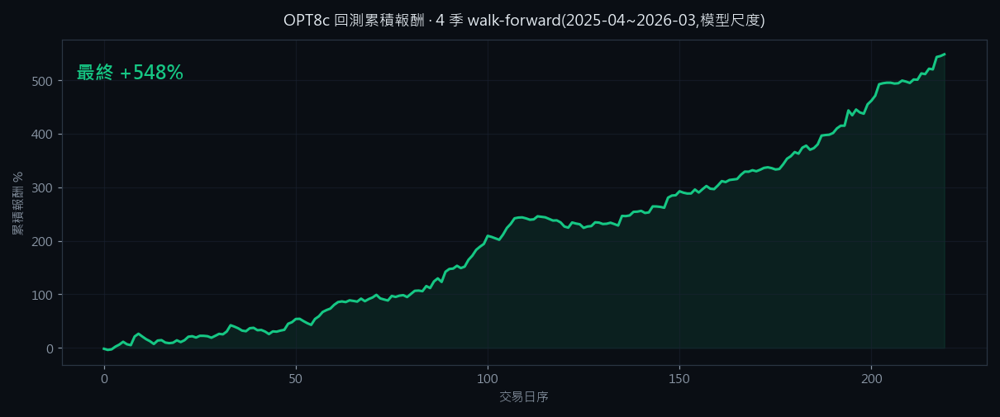

3 套
並行 ML 進場引擎
OPT8c 三套機器學習引擎自動選股與決策、即時 tick K 線、專業券商級三區工作台,並以 Discord 與 Web 儀表板遠端監控。盤中、回測、訓練模型三者逐筆 100% 等價。
每分鐘對當日候選股以三套模型並行評分,通過多道前置閘門後,由分數最高且過門檻者進場。出場採依動能調整的動態停損。
三套各自獨立的機器學習模型同時運作,涵蓋三種市場情境;以純 K 線特徵即時推論,不依賴即時籌碼讀取。
模型只用過去資料訓練,對「沒看過的」未來市況仍正報酬;2022–2026 隨機抽樣回測 19 季中 16 季為正,證明是市況依賴而非過度配適。
一個畫面整合即時報價、多日無縫 K 線、五檔、下單匣、風控水位與帳戶總覽;全面對齊專業券商終端的視覺密度。
從每分鐘輪詢升級為毫秒級 tick 聚合;當前 K 棒即時長大,搭配成交量副圖與進出場標記。
買賣雙 tab、價格/張數 ±微調、LMT/MKT、ROD/IOC/FOK,直式券商佈局。
今日進場 X/5、距熔斷 Y/4、日虧上限,逼近上限即變色提醒。
委託中狀態 + 右鍵改價 / 改量 / 撤單,即時同步券商回報。
同一套 OPT8c 引擎跑回測與實盤;一年回測 GUI 與獨立重跑「一元不差」。績效完整公開,並誠實標註限制。
我們把「回測偏樂觀」的部分也誠實揭露(回測未套每日 5 檔上限、未含真實滑點),讓你看到的是可被獨立驗證的數字。

從手機或瀏覽器掌握系統狀態:Discord 指令查詢、事件推播、可自訂的推播積木,以及 magic-link 登入的 Web 儀表板。
/status、/positions、/pnl、/risk、/groups… 隨時查詢系統與持倉。
進場 / 出場 / 停損 / 風控熔斷 / 每日盤後報告,可逐項訂閱。
自訂事件訊息模板與頻道、權限矩陣,組合出你要的通知流。
magic-link 登入,即時持倉、警示中心、經濟行事曆、電源控制。
高影響事件提前 30 分鐘預警(美/日/台/歐)。
client ⇄ server 強綁定、雙 client 去重、稽核日誌。
從設定到自動盤中交易,只要三步。出廠為模擬模式,確認穩定再切實盤。
填入永豐金 Shioaji API(支援正式 + 模擬雙模式),一鍵驗證連線狀態。
用內建回測區跑歷史資料,確認策略表現與風控水位,熟悉操作。
09:00 前開啟盤中監控,系統自動選股、進場、停損、尾盤結算,並推播到手機。
目前以永豐金 Shioaji 為主(支援正式與模擬下單),並相容部分其他券商。需自備券商帳號與 API 權限。
不會。出廠預設為「模擬模式」+ 安全資金預設,且每次切換正式模式都需手動確認、送單前再驗證一致性。實盤前請充分測試。
站上績效為「回測(歷史模擬)」與「模擬交易實測」結果,皆非實際下單績效,並附完整免責。詳見績效頁。過去績效不代表未來。
內建自動更新:新版發佈後,程式會自動偵測並一鍵更新(免管理員、免解除安裝)。
不是。REMORA 是交易工具,不構成任何投資建議;交易有風險,盈虧自負。
Windows 桌面應用,內建自動更新。出廠為模擬模式 + 安全資金預設,實盤需手動切換確認。
v2.1.0 最後軟測試中,即將釋出;Releases 提供目前最新版本。內建自動更新:新版發佈後程式會自動偵測並一鍵更新(免管理員、免解除安裝)。